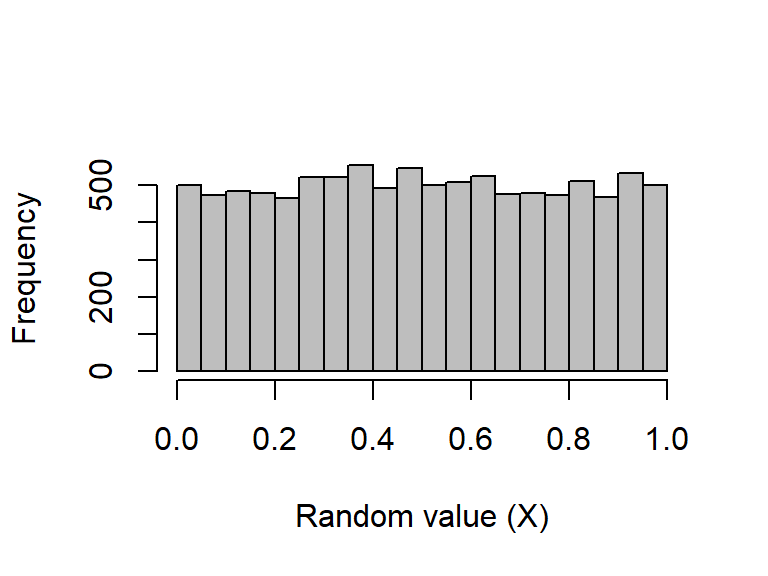
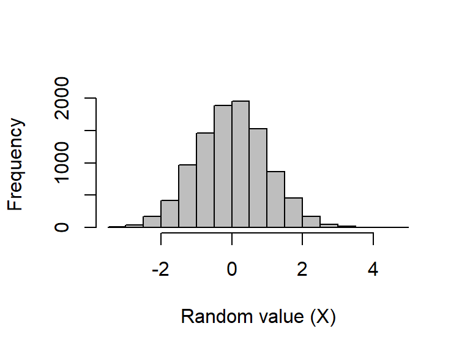
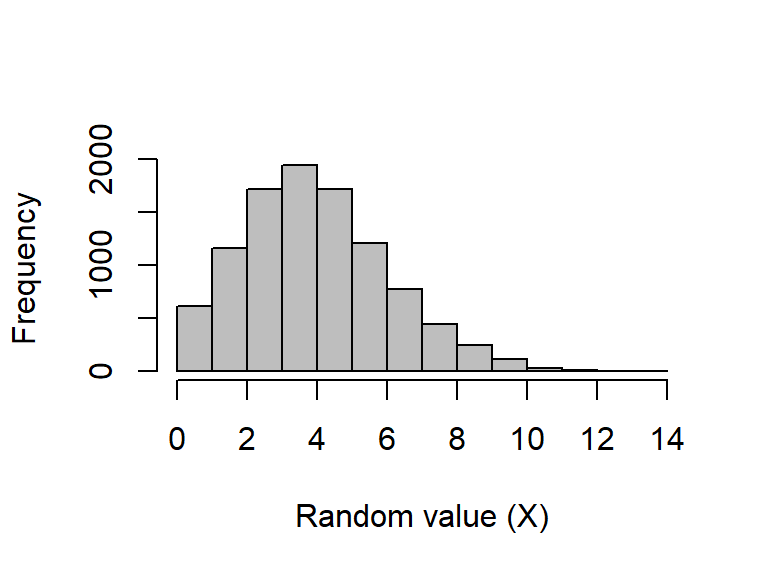
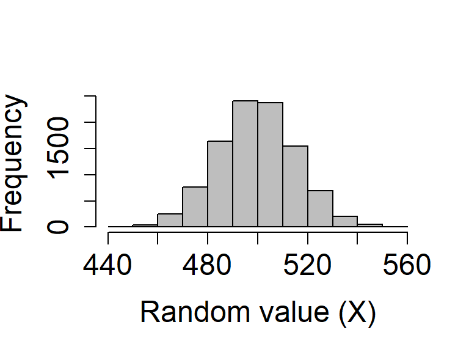

| Package : : Function | Purpose |
|---|---|
sample() |
sampling elements from an R object with or without replacement |
replicate() |
it is used to evaluate an expression N number of times repeatedly; often plays a role in conjunction with sampling functions |
runif() |
sampling from a uniform distribution |
rnorm() |
sampling from a normal distribution |
rbinom() |
sampling from a binomial distribution |
rpois() |
sampling from a Poisson distribution |
MASS::mvtnorm() |
sampling from a multivariate normal distribution; sampling multiple variables with a known correlation structure (i.e., we can tell R how variables should be correlated with one another) and normally distributed errors |
Week 8 coding
Designs: Simulation-based power analysis for study design
The application workshop will use functions from the following packages:
Explore the package websites for an overview of the purposes and the main functions of these packages.
The uses of simulation methods
Simulating data uses generating random data sets with known properties using code (or some other method). This can be useful in various contexts.
- To better understand our models. Probability models mimic variation in the world, and the tools of simulation can help us better understand this variation. Patterns of randomness are contrary to normal human thinking and simulation helps in training our intuitions about averages and variation
- To run statistical analyses (e.g., simulating a null distribution against which to compare a sample)
- To approximate the sampling distribution of data and propagate this to the sampling distribution of statistical estimates and procedures
Sampling from a uniform distribution
The runif function returns some number (n) of random numbers from a uniform distribution with a range from \(a\) (min) to \(b\) (max) such that \(X\sim\mathcal U(a,b)\) (verbally, \(X\) is sampled from a uniform distribution with the parameters \(a\) and \(b\)), where \(-\infty < a < b < \infty\) (verbally, \(a\) is greater than negative infinity but less than \(b\), and \(b\) is finite). The default is to draw from a standard uniform distribution (i.e., \(a = 0\) and \(b = 1\)):
# Sample a vector of ten numbers and store the results in the object `rand_unifs`
# Note that the numbers will be different each time we re-run the `runif` function above.
# If we want to recreate the same sample, we should set a `seed` number first
rand_unifs <- runif(n = 10000, min = 0, max = 1)The first 40 numbers from the sample are:
[1] 0.37923250 0.91031329 0.51962036 0.73375217 0.39712124 0.92757059
[7] 0.68321572 0.27726684 0.73691318 0.37718149 0.09343578 0.38205713
[13] 0.41005824 0.69462383 0.78355182 0.51796884 0.74805082 0.32270009
[19] 0.12628188 0.32961120 0.07781008 0.17934783 0.44529315 0.41810640
[25] 0.32620098 0.70087971 0.97061160 0.75944907 0.49219373 0.90292483
[31] 0.45282273 0.98193123 0.68761876 0.87881210 0.94842655 0.36379273
[37] 0.69781239 0.29576034 0.45606897 0.92343322 0.17209839 0.67444064
[43] 0.20859164 0.85979483 0.64773669 0.20318914 0.72951248 0.53123511
[49] 0.46795271 0.20732255To visualise the entire sample, we can plot it on a histogram:

Sampling from a normal distribution
The rnorm function returns some number (n) of randomly generated values given a set mean (\(\mu\); mean) and standard deviation (\(\sigma\); sd), such that \(X\sim\mathcal N(\mu,\sigma^2)\). The default is to draw from a standard normal (a.k.a., “Gaussian”) distribution (i.e., \(\mu = 0\) and \(\sigma = 1\)):
[1] -0.1631028 0.6413395 -0.3517918 -0.1752250 1.0394962 0.2766921
[7] -2.5591545 1.2857627 -0.1904977 2.4942241 0.5793675 -0.9459978
[13] 0.0523763 0.8114741 -0.4730451 0.2539988 1.6975033 0.2382903
[19] -1.2884085 -0.3570184
- Histograms allow us to check how samples from the same distribution might vary.
Sampling from a Poisson distribution
A Poisson process describes events happening with some given probability over an area of time or space such that \(X\sim Poisson(\lambda)\), where the rate parameter \(\lambda\) is both the mean and variance of the Poisson distribution (note that by definition, \(\lambda > 0\), and although \(\lambda\) can be any positive real number, data are always integers, as with count data).
Sampling from a Poisson distribution can be done in R with rpois, which takes only two arguments specifying the number of values to be returned (n) and the rate parameter (lambda). There are no default values for rpois.
A histogram of a large number of values to see the distribution when \(\lambda = 4.5\):
rand_poissons_10000 <- rpois(n = 10000, lambda = 4.5)
Sampling from a binomial distribution
A binomial distribution describes the number of ‘successes’ for some number of independent trials (\(\Pr(success) = p\)).
The
rbinomfunction returns the number of successes aftersizetrials, in which the probability of success in each trial isprob.Sampling from a binomial distribution in R with
rbinomis a bit more complex than usingrunif,rnorm, orrpois.Like those previous functions, the
rbinomfunction returns some number (n) of random numbers, but the arguments and output can be slightly confusing at first.For example, suppose we want to simulate the flipping of a fair coin 1000 times, and we want to know how many times that coin comes up heads (‘success’). We can do this with the following code:
coin_flips <- rbinom(n = 1, size = 1000, prob = 0.5)
coin_flips[1] 493The above result shows that the coin came up heads 493 times. But note the (required) argument
n. This allows us to set the number of sequences to run.If we instead set
n = 2, then this could simulate the flipping of a fair coin 1000 times once to see how many times heads comes up, then repeating the whole process a second time to see how many times heads comes up again (or, if it is more intuitive, the flipping of two separate fair coins 1000 times at the same time).
coin_flips_2 <- rbinom(n = 2, size = 1000, prob = 0.5)
coin_flips_2[1] 493 504A coin was flipped 1000 times and returned 493 heads, and then another fair coin was flipped 1000 times and returned 504 heads.
As with the
rnormandruniffunctions, we can check to see what the distribution of the binomial function looks like if we repeat this process.Suppose that we want to see the distribution of the number of times heads comes up after 1000 flips. We can simulate the process of flipping 1000 times in a row with 10000 different coins:
coin_flips_10000 <- rbinom(n = 10000, size = 1000, prob = 0.5)
Random sampling using sample
Sometimes it is useful to sample a set of values from a vector or list. The R function
sampleis very flexible for sampling a subset of numbers or elements from some structure (x) in R according to some set probabilities (prob).Elements can be sampled from
xsome number of times (size) with or without replacement (replace), though an error will be returned if thesizeof the sample is larger thanxbutreplace = FALSE(default).Suppose we want to ask R to pick a random number from one to ten with equal probability:
- We can increase the
sizeof the sample to10:
Note that all numbers from 1 to 10 have been sampled, but in a random order. This is because the default is to sample without replacement, meaning that once a number has been sampled for the first element in
rand_number_10, it is no longer available to be sampled again.We can change this and allow for sampling with replacement:
[1] 5 7 9 6 1 7 10 2 1 2Note that the numbers {1, 2, 7} are now repeated in the set of randomly sampled values above.
So far, because we have not specified a probability vector
prob, the function assumes that every element in1:10is sampled with equal probabilityHere’s an example in which the numbers 1-5 are sampled with a probability of 0.05, while the numbers 6-10 are sampled with a probability of 0.15, thereby biasing sampling toward larger numbers; we always need to ensure that these probabilities need to sum to 1.
Sampling random characters from a list
We can also sample characters from a list of elements; it is no different than sampling numbers
For example, if we want to create a simulated data set that includes three different species of some plant or animal, we could create a vector of species identities from which to sample:
species <- c("species_A", "species_B", "species_C");- We can then sample from these three possible categories. For example:
- What did the code above do?
[1] "species_A" "species_B" "species_A" "species_A" "species_A" "species_B"
[7] "species_A" "species_A" "species_A" "species_B" "species_B" "species_C"
[13] "species_B" "species_A" "species_B" "species_C" "species_C" "species_A"
[19] "species_C" "species_B" "species_A" "species_C" "species_A" "species_B"Simulating data with known correlations
We can generate variables \(X_{1}\) and \(X_{2}\) that have known correlations \(\rho\) with with one another.
For example: two standard normal random variables with a sample size of 10000, and with correlation between them of 0.3:
- These variables are generated by first simulating the sample \(x_{1}\) (
x1above) from a standard normal distribution. Then, \(x_{2}\) (x2above) is calculated as
\(x_{2} = \rho x_{1} + \sqrt{1 - \rho^{2}}x_{rand}\),
where \(x_{rand}\) is a sample from a normal distribution with the same variance as \(x_{1}\).
We can generate variables \(X_{1}\) and \(X_{2}\) that have known correlations \(\rho\) with with one another.
For example: two standard normal random variables with a sample size of 10000, and with correlation between them of 0.3:
- Does the correlation equal
rho(with some sampling error)?
cor(x1, x2)[1] 0.309489There is a more efficient way to generate any number of variables with different variances and correlations to one another.
We need to use the MASS library, which can be installed and loaded as below:
In the MASS library, the function
mvrnormcan be used to generate any number of variables for a pre-specified covariance structure.